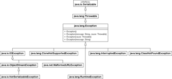
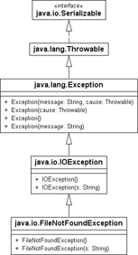

6.3 Die Klassenhierarchie der Fehler
Eine Exception ist ein Objekt, dessen Typ direkt oder indirekt von java.lang.Throwable abgeleitet ist (die Namensgebung mit -able legt eine Schnittstelle nahe, aber Throwable ist eine nicht-abstrakte Klasse). Von dort aus verzweigt sich die Hierarchie der Fehlerarten nach java.lang.Exception und java.lang.Error. Die Klassen, die aus Error hervorgehen, sollen nicht weiterverfolgt werden. Es handelt sich hierbei um so schwerwiegende Fehler, dass sie zur Beendigung des Programms führen und vom Programmierer nicht weiter beachtet werden müssen und sollen. Throwable vererbt eine Reihe von nützlichen Methoden, die in der folgenden Grafik sichtbar sind. Sie fasst gleichzeitig die Vererbungsbeziehungen noch einmal zusammen.

Abbildung 6.8: UML-Diagramm der wichtigen Oberklasse Throwable
6.3.1 Die Exception-Hierarchie
Jede Benutzerausnahme wird von java.lang.Exception abgeleitet. Die Exceptions sind Fehler oder Ausnahmesituationen, die vom Programmierer behandelt werden sollen. Die Klasse Exception teilt sich dann nochmals in weitere Unterklassen beziehungsweise Unterhierarchien auf. Die folgende Grafik zeigt einige Unterklassen der Klasse Exception:
Abbildung 6.9: Ausgewählte Unterklassen von Exception
6.3.2 Oberausnahmen auffangen
Eine Konsequenz der Hierarchien besteht darin, dass es ausreicht, einen Fehler der Oberklasse aufzufangen. Wenn zum Beispiel eine FileNotFoundException auftritt, ist diese Klasse von IOException abgeleitet, was bedeutet, dass FileNotFoundException eine Spezialisierung darstellt. Wenn wir jede IOException auffangen, behandeln wir damit auch gleichzeitig die FileNotFoundException mit.
Erinnern wir uns noch einmal an das Dateibeispiel. Dort haben wir eine FileNotFoundException und eine IOException einzeln behandelt. Ist die Behandlung aber die gleiche, lässt sie sich wie folgt zusammenfassen:
Listing 6.12: ReadGifSizeShort.java, main()
RandomAccessFile f = null;
try
{
f = new RandomAccessFile( "duke.gif", "r" );
f.seek( 6 );
System.out.printf( "%s x %s Pixel%n", f.read() + f.read() * 256,
f.read() + f.read() * 256 );
}
catch ( IOException e )
{
System.err.println( "Allgemeiner Ein-/Ausgabefehler!" );
}
finally
{
if ( f != null ) try { f.close(); } catch ( IOException e ) { }
}
Angst davor, dass wir den Fehlertyp später nicht mehr unterscheiden können, brauchen wir nicht zu haben, denn die an die catch-Anweisung gebundenen Variablen können wir mit instanceof weiter verfeinern. Aus Gründen der Übersichtlichkeit sollte diese Technik jedoch sparsam angewendet werden. Fehlerarten, die unterschiedlich behandelt werden müssen, verdienen immer getrennte catch-Klauseln. Das trifft zum Beispiel auf FileNotFoundException und IOException zu.
Abbildung 6.10: IOException im Klassendiagramm
6.3.3 Schon gefangen?
Der Java-Compiler prüft, ob Ausnahmen vielleicht schon in der Kette aufgefangen wurden, und meldet einen Fehler, wenn catch-Blöcke nicht erreichbar sind. Wir haben gesehen, dass FileNotFoundException eine spezielle IOException ist, und ein catch(IOException e) Fehler vom FileNotFoundException gleich mit fängt.
try
{
...
}
catch ( IOException e ) // fange IOException und alle Unterklassen auf
{
...
}
Natürlich kann eine FileNotFoundException weiterhin als eigener Typ aufgefangen werden, allerdings ist es wichtig, die Reihenfolge der catch-Blöcke zu beachten. Denn die Reihenfolge ist absolut relevant; die Typtests beginnen oben und laufen dann weiter nach unten durch. Wenn ein früher catch schon Ausnahmen eines gewissen Typs abfängt, also etwa ein catch auf IOException alle Ein-/Ausgabefehler, so ist ein nachfolgender catch auf die FileNotFoundException falsch.
Nehmen wir an, ein try-Block kann eine FileNotFoundException und eine IOException auslösen. Dann ist die linke Behandlung korrekt, aber die rechte falsch:
| Richtig | Mit Compilerfehler |
|
try |
try |
6.3.4 Alles geht als Exception durch
Löst ein Programmblock etwa eine IOException, MalformedURLException und eine FileNotFoundException aus, soll der Fehler aber gleich behandelt werden, so fängt ein catch(IOException e) die beiden Fehler FileNotFoundException und MalformedURLException gleich mit ab, da beide Unterklassen von IOException sind. So behandelt ein Block alle drei Fehlertypen. Das ist praktisch.
Nun gibt es jedoch auch Ausnahmen, die in der Vererbungsbeziehung nebeneinanderliegen, etwa SQLException und IOException. Was ist, wenn die Ausnahmebehandlung gleich sein soll? Die naheliegende Idee ist, die Ausnahmehierarchie so weit nach oben zu laufen, bis eine gemeinsame Oberklasse gefunden wurde. Bei SQLException und IOException ist das Exception – sozusagen der kleinste gemeinsame Nenner. Also könnten Entwickler auf die Idee kommen, Exception aufzufangen und dort einmal den Fehler zu behandeln. Anstatt also einen Behandler zweimal zu schreiben und eine Codeduplizierung zu verursachen wie in
try
{
irgendwas kann SQLException auslösen ...
irgendwas kann IOException auslösen ...
}
catch ( SQLException e ) { Behandlung }
catch ( IOException e ) { Behandlung }
lässt sich aufgrund der identischen Fehlerbehandlungen eine Optimierung versuchen, die etwa so aussieht:
try
{
irgendwas kann SQLException auslösen ...
irgendwas kann IOException auslösen ...
}
catch ( Exception e ) { Behandlung }
Von dieser Lösung ist dringend abzuraten! Denn was für andere Fehlertypen gut funktionieren mag, ist für catch(Exception e) gefährlich, weil wirklich jede Ausnahme aufgefangen und in der Ausnahmebehandlung bearbeitet wird. Taucht beispielsweise eine null-Referenz durch eine nicht initialisierte Variable mit Referenztyp auf, so würde dies fälschlicherweise ebenso behandelt; der Programmfehler hat aber nichts mit der SQLException oder IOException zu tun:
try
{
Point p = null;
p.x = 2; //NullPointerException
int i = 0;
int x = 12 / i; //
irgendwas kann SQLException auslösen ...
irgendwas kann IOException auslösen ...
}
catch ( Exception e ) { Behandlung }
Eine NullPointerException und die ArithmeticException sollen nicht mitbehandelt werden. Das zentrale Problem ist hier, dass diese Fehler ungeprüfte Ausnahmen vom Typ RuntimeException sind. RuntimeException ist eine Unterklasse von Exception. Fangen wir alle Exception-Typen, so wird alles mitgefangen – und RuntimeException eben auch. Es ist nicht möglich, alle Nicht-Laufzeitfehler abzufangen, was etwa funktionieren würde, wenn RuntimeException keine Unterklasse von Exception wäre, etwa ein Throwable – aber das haben die Sprachdesigner nicht so modelliert.
Wir werden gleich sehen, wie sich das Problem elegant lösen lässt.
Wenn main() alles weiterleitet
Ist die Fehlerbehandlung in einem Hauptprogramm ganz egal, so können wir alle Fehler auch an die Laufzeitumgebung weiterleiten, die dann das Programm – genau genommen den Thread – im Fehlerfall abbricht:
Listing 6.13: IDontCare.java, main()
public static void main( String[] args ) throws Exception
{
RandomAccessFile f = new RandomAccessFile( "Datei.txt", "r" );
System.out.println( f.readLine() );
}
Das funktioniert, da alle Fehler von der Klasse Exception[149](Genauer gesagt, sind alle Ausnahmen in Java von der Exception-Oberklasse Throwable abgeleitet.) abgeleitet sind. Wird der Fehler nirgendwo sonst aufgefangen, erfolgt die Ausgabe einer Laufzeitfehlermeldung, denn das Exception-Objekt ist beim Interpreter, also bei der virtuellen Maschine, auf der äußersten Aufrufebene gelandet. Natürlich ist das kein guter Stil – obwohl es aus Gründen kürzerer Programme auch in diesem Buch so gemacht wird. Denn Fehler sollten in jedem Fall behandelt werden.
6.3.5 Zusammenfassen gleicher catch-Blöcke mit dem multi-catch
Greift ein Programm auf Teile zurück, die scheitern können, so ergeben sich in komplexeren Abläufen schnell Situationen, in denen unterschiedliche Ausnahmen auftreten können. Entwickler sollten versuchen, den Programmcode in einem try-Block durchzuschreiben, und dann in catch-Blöcken auf alle möglichen Fehler zu reagieren, die den Block vom korrekten Durchlaufen abgehalten haben.
Oftmals kommt es zu dem Phänomen, dass die aufgerufenen Programmteile unterschiedliche Ausnahmetypen auslösen, aber die Behandlung der Fehler gleich aussieht. Um Quellcodeduplizierung zu vermeiden, sollte der Programmcode zusammengefasst werden. Nehmen wir an, die Behandlung der Ausnahmen SQLException und IOException soll gleich sein. Wir haben schon gesehen, dass ein catch(Exception e) keine gute Lösung ist und nie im Programmcode vorkommen sollte, denn dann würden auch andere Ausnahmen mitgefangen. Zum Glück gibt es in Java 7 eine elegante Lösung.
Multi-catch
Java 7 führt eine neue Schreibweise für catch-Anweisungen ein, um mehrere Ausnahmen auf einmal aufzufangen; sie heißt multi-catch. In der abgewandelten Variante von catch steht dann nicht mehr nur eine Ausnahme, sondern eine Sammlung von Ausnahmen, die ein »|« trennt. Der Schrägstrich ist schon als Oder-Operator bekannt und wurde daher auch hier eingesetzt, denn die Ausnahmen sind ja auch als eine Oder-Verknüpfung zu verstehen. Die allgemeine Syntax ist:
try
{
...
}
catch ( E1 | E2 | ... | En exception )
Die Variable exception ist implizit final.
Um das multi-catch zu demonstrieren, nehmen wir ein Programm an, das eine Farbtabelle einliest. Die Datei besteht aus mehreren Zeilen, wobei in jeder Zeile die erste Zahl einen Index repräsentiert und die zweite Zahl den hexadezimalen RGB-Farbwert.
Listing 6.14: basiscolors.txt
0 000000
1 ff0000
8 00ff00
9 ffff00
Eine eigene Methode readColorTable() soll die Datei einlesen und ein int-Feld der Größe 256 als Rückgabe liefern, wobei an den in der Datei angegebenen Positionen jeweils die Farbwerte eingetragen sind. Nicht belegte Positionen bleiben 0. Gibt es einen Ladefehler, soll die Rückgabe null sein und die Methode eine Meldung auf dem Fehlerausgabekanal ausgeben.
Das Einlesen soll die Scanner-Klasse übernehmen. Bei der Verarbeitung der Daten und der Füllung des Feldes sind diverse Fehler denkbar:
- IOException: Die Datei ist nicht vorhanden, oder während des Einlesens kommt es zu Problemen.
- InputMismatchException: Der Index oder die Hexadezimalzahl sind keine Zahlen (einmal zur Basis 10, und dann zur Basis 16). Den Fehlertyp löst der Scanner aus.
- ArrayIndexOutOfBoundsException: Der Index liegt nicht im Bereich von 0 bis 255.
Während der erste Fehler beim Dateisystem zu suchen ist, sind die zwei unteren Fehler – unabhängig davon, dass sie ungeprüfte Ausnahmen sind – auf ein fehlerhaftes Format zurückzuführen. Die Behandlung soll immer gleich aussehen und kann daher gut in einem multi-catch zusammengefasst werden. Daraus folgt:
Listing 6.15: ReadColorTable.java
import java.io.*;
import java.util.Scanner;
public class ReadColorTable
{
private static int[] readColorTable( String filename )
{
Scanner input;
int[] colors = new int[ 256 ];
try
{
input = new Scanner( new File(filename) );
while ( input.hasNextLine() )
{
int index = input.nextInt();
int rgb = input.nextInt( 16 );
colors[ index ] = rgb;
}
return colors;
}
catch ( IOException e )
{
System.err.printf( "Dateioperationen fehlgeschlagen%n%s%n", e );
}
catch ( InputMismatchException | ArrayIndexOutOfBoundsException e )
{
System.err.printf( "Datenformat falsch%n%s%n", e );
}
finally
{
input.close();
}
return null;
}
public static void main( String[] args )
{
readColorTable( "basiscolors.txt" );
}
}
Multi-catch-Blöcke sind also eine Abkürzung, und der Bytecode sieht genauso aus wie mehrere gesetzte catch-Blöcke, also wie:
catch ( InputMismatchException e )
{
System.err.printf( "Datenformat falsch%n%s%n", e );
}
catch ( ArrayIndexOutOfBoundsException e )
{
System.err.printf( "Datenformat falsch%n%s%n", e );
}
Multi-catch-Blöcke sind nur eine Abkürzung, daher teilen sie auch die Eigenschaften der normalen catch-Blöcke. Der Compiler führt die gleichen Prüfungen wie bisher durch, also ob etwa die genannten Ausnahmen im try-Block überhaupt ausgelöst werden können. Nur das, was in der durch »|« getrennten Liste aufgezählt ist, wird behandelt; unser Programm fängt zum Beispiel nicht generisch alle RuntimeExceptions ab. Und genauso dürfen die in catch oder multi-catch genannten Ausnahmen nicht in einem anderen (multi)-catch auftauchen.
Neben den Standard-Tests kommen neue Überprüfungen hinzu, ob etwa die exakt gleiche Exception zweimal in der Liste ist oder ob es Widersprüche durch Mengenbeziehungen gibt.
| Hinweis |
|
Der folgende multi-catch ist falsch: try try { new RandomAccessFile("", ""); } |
|
Während allerdings eine Umsortierung der Zeilen die Fehler korrigiert – wie in Abschnitt 6.3.3 erwähnt –, spielt die Reihenfolge bei multi-catch keine Rolle. |
Ihr Kommentar
Wie hat Ihnen das <openbook> gefallen? Wir freuen uns immer über Ihre freundlichen und kritischen Rückmeldungen.
 Jetzt bestellen
Jetzt bestellen


{kind=link}
{kind=link}